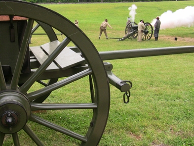
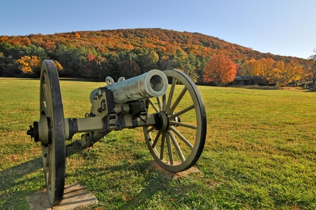
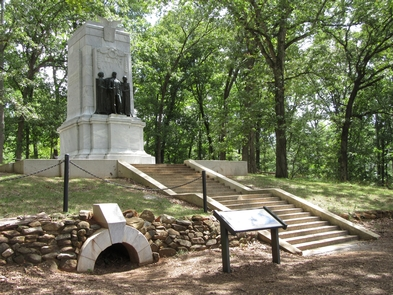
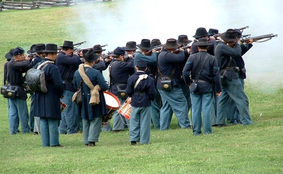
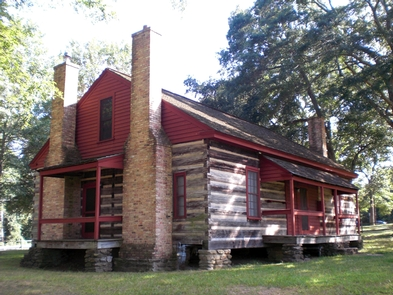

Conservation means the wise use of the earth and its resources for the lasting good.
Between every two pine trees there is a door leading to a new way of life.
North Georgia specifically. One of my favorite places to go within a few hours drive of home is the mountains and hills of northern Georgia in the fall. There is a popular pumpkin patch just outside of Dawsonville, GA we have made a tradition to visit annually. So, lets see what we can find nearby...
I'll start by entering Dawonsonville, GA into Google Maps. If I take a look at the pane that pops up on the left side of the page, and the address bar, I have information for the zip code, latitude, and longitude for Dawsonville, GA. Now, looking back at the documentation in the RIDB under "Get All Recreation Areas" we find a listing of available "URL Parameters". We can use these parameters to filter through all the records in the RIDB to those which are specific to our needs. If I were interested in retrieving records near a specific location, I can see that the "latitude", "longitude", and "radius" parameters will fit the purpose.
I'll start by creating an object populated with the data I found on Google Maps for Dawsonville, and a variable to hold the distance (miles) I am willing to search:
var Dawsonville = {
latitude:34.43018,
longitude:-84.12900,
zipCode:30534,
state:"Georgia",
stateAbbrev:"GA"
}
var distance = 50; /*50 miles being the max distance I can travel without complaints from the back seat*/
Now, modify the request we made on the previous page to create a recreation area request, using the latitude, longitude, and radius parameters by appending them into the URL with the ampersand (&):
req.open('GET', 'https://ridb.recreation.gov/api/v1/recareas/?latitude=' + Dawsonville.latitude + "&longitude=" + Dawsonville.longitude + "&radius=" + distance + "&" + MyapiKey , true);
Looking through the return, you may notice a few attributes of particular interest: RecAreaName:, RecAreDescription:, RecAreaDirections:, keywords:, and RecAreaPhone: all look to be good resource information. Lets do something with it.
We are now going to generate multiple 'blocks' of recreation area data, one for each recreation area within 50 miles of Dawsonville, Georgia. Each 'block' will contain the name of a recreation area as a header, an about section, directions to the area, and contact information. Here we go.
var Dawsonville = {
latitude:34.43018,
longitude:-84.12900,
zipCode:30534,
state:"Georgia",
stateAbbrev:"GA"
}
var distance = 50;
var req = new XMLHttpRequest();
req.open('GET', 'https://ridb.recreation.gov/api/v1/recareas/?latitude=' + Dawsonville.latitude + "&longitude=" + Dawsonville.longitude + "&radius=" + distance + "&" + MyapiKey , true);
req.addEventListener('load', function(){
if (req.status >= 200 && req.status < 400){
var dataCollected = JSON.parse(req.responseText);
var targetObjects = dataCollected.RECDATA;
console.log(targetObjects);
/*The following code with create a div for each object in the returned array.
Each div will contain a h3 header for the area name, a block for the rec area
description, a block for directions to the rec area, and a contact phone number.
The div for each area (oject) will then be added to the HTML body*/
targetObjects.forEach(function(element){
var newRecOpp = document.createElement("div");
/*Create header for rec area*/
var newRecOppHeader = document.createElement("h3");
newRecOppHeader.textContent = element.RecAreaName;
newRecOpp.appendChild(newRecOppHeader);
newRecOpp.style.border = '1px solid';
newRecOpp.style.marginTop = '10px';
newRecOpp.style.padding = '5px';
/*Create about paragraph for rec area*/
var aboutArea = document.createElement("h4");
aboutArea.textContent = "About Area:";
var aboutAreaText = document.createElement("p");
aboutAreaText.innerHTML = element.RecAreaDescription;
newRecOpp.appendChild(aboutArea);
newRecOpp.appendChild(aboutAreaText);
/*Create directions paragraph for rec area*/
var directions = document.createElement("h4");
directions.textContent = "Directions:";
var directionsText = document.createElement("p");
directionsText.textContent = element.RecAreaDirections;
newRecOpp.appendChild(directions);
newRecOpp.appendChild(directionsText);
/*Create directions paragraph for rec area*/
var contactInfo = document.createElement("h4");
contactInfo.textContent = "Contact:";
var contactText = document.createElement("p");
contactText.textContent = element.RecAreaPhone;
newRecOpp.appendChild(contactInfo);
newRecOpp.appendChild(contactText);
/*Add rec area to page*/
document.body.appendChild(newRecOpp);
});
}
else {
console.log("Error in network request: " + req.statusText);
}
;})
req.send(null);
Now we get to enjoy the result:
Allatoona Lake is one of the most frequently visited U.S. Army Corps of Engineers lakes in the nation. Located only 30 miles from Atlanta, more than 6 million visitors each year enjoy picnicking, camping, hunting, fishing, swimming and other water sports, and observing the abundant wildlife along the shores of this beautiful lake. The visitor center features video exhibits and displays about the area's history, ranging from the time of early Indians to the gold mining and iron making days, from Civil War up to the present.
From Atlanta, 45 miles north on I-75 to Exit 290, east on GA 20, south on GA 20 Spur to the dam and visitor center.
(678) 721-6700
Nestled in the foothills of the Georgia Blue Ridge Mountains lies Lake Sidney Lanier, one of America?s favorite lakes. Over 7.5 million people a year choose to visit Lanier. Seventy-six recreational areas have been developed around the lake under the direction of the Corps of Engineers. These include 46 parks operated directly by the Corps, 10 marinas, and Lake Lanier Islands. The remaining areas are leased to county and city governments or other organizations such as the Boy Scouts. With over 692 miles of shoreline, the lake is well known for its aqua-blue colored water, spectacular scenery and variety of recreational activities. Constructed by the U.S. Army Corps of Engineers in the 1950?s, Lake Lanier is a multi-purpose lake that provides for flood protection, power production, water supply, navigation, recreation and fish and wildlife management. Lake Lanier is one of 464 lakes in 43 states constructed and operated by the U. S. Army Corps of Engineers. It has won the best operated lake of the year award in 1990, 1997 and 2002.
From I-985/Buford Take GA Hwy 20 West, from GA 400/Cumming, take Ga Hwy 20 East, to North on Suwanee Dam Road. Go three miles and go left on Buford Dam Road. The Visitor Center is one mile down on the right.
(770) 945-9531
Carters Lake Project is managed by the U.S. Army Corps of Engineers, Mobile District. Carters Lake is one of the most scenic lakes in the Southeast. Located at the southern end of the Blue Ridge Mountains, its sparkling waters and rugged shoreline provide a beautiful surrounding for a variety of recreational opportunities which includes: camping, picnicking, boating, fishing, and hunting.
From North East Atlanta; I-575 North to Carters Lake Exit. Follow signs to desired project locations. From North Atlanta; I-75 North to Exit 293 then Right on Hwy 136. Follow signs to desired project locations. From Chattanooga TN. I-75 South to Exit 336.
(706) 334-2248
Frequently Asked Questions - Got questions about the forest? Please take a look here before you pick up the phone. You'll probably find the answer to your question.
Wilderness - 10 wilderness areas; over 100,000 acres of solitude!
Be Safe - From fly fishing to backpacking to OHV riding your adventure awaits on the national forest. But the best adventures are safe adventures so checkout Outdoor Safety in the South before planning your trip. Always remember, your safety is your responsibility.
Today the river valley attracts us for so many reasons. Take a solitary walk to enjoy nature’s display, raft leisurely through the rocky shoals with friends, fish the misty waters as the sun comes up, or have a picnic on a Sunday afternoon. Get Outdoors and experience your Chattahoochee River National Recreation Area as you have never done before.
To find the Island Ford Visitor Center enter the physical address listed above into your GPS unit or your favorite map software.
(678) 538-1200
Kennesaw Mountain National Battlefield Park is a 2,965 acre National Battlefield that preserves a Civil War battleground of the Atlanta Campaign. Opposing forces maneuvered and fought here from June 19, 1864 until July 2, 1864. Although most famous as a Civil War battlefield, Kennesaw Mountain has a much richer story.
Take exit 269 (Barrett Parkway). At the stoplight head west onto Barrett Parkway. Follow Barrett Parkway for approximately 3 miles, turn left at the light, onto Old Hwy 41. Turn right at your next light, Stilesboro Rd. The visitor center will be immediately on your left (brown and white signs located along the roads will guide you as well).
(770) 427-4686
A young boy grows up in a time of segregation…A dreamer is moved by destiny into leadership of the modern civil rights movement…This was Martin Luther King, Jr. Come hear his story, visit the home of his birth, and where he played as a child. Walk in his footsteps, and hear his voice in the church where he moved hearts and minds. Marvel at how he was an instrument for social change.
The park is accessible via public transportation and by car.
(404) 331-5190
It should now be pretty easy to see how this information can be modified, styled and added to any page you wish. Maybe for a vacation journal or maybe to highlight recreational opportunities near the cabin you are trying to rent out.
However, there is one more piece we can add to this to really make it interesting. If we look further down the RIDB documentation, we see a request example for Recreation Area Media. This request returns URL endpoints for media associated with a particular recreation area, when given the recreation area unique ID number. It just so happens that our recreation areas we built the above 'block' from, have these unique recreation area ID within their attributes. Let's modify our code to include any available pictures of the rec areas, by nesting another request into our code.
var req = new XMLHttpRequest();
req.open('GET', 'https://ridb.recreation.gov/api/v1/recareas/?latitude=' + Dawsonville.latitude + "&longitude=" + Dawsonville.longitude + "&radius=" + distance + "&" + MyapiKey , true);
req.addEventListener('load', function(){
if (req.status >= 200 && req.status < 400){
var dataCollected = JSON.parse(req.responseText);
var targetObjects = dataCollected.RECDATA;
console.log(targetObjects);
/*The following code with create a div for each object in the returned array.
Each div will contain a h3 header for the area name, a block for the rec area
description, a block for directions to the rec area, and a contact phone number.
The div for each area (oject) will then be added to the HTML body*/
targetObjects.forEach(function(element){
var newRecOpp = document.createElement("div");
/*Create header for rec area*/
/*... same code as before ...*/
/*Create about paragraph for rec area*/
/*... same code as before ...*/
/*Create directions paragraph for rec area*/
/*... same code as before ...*/
/*Create directions paragraph for rec area*/
/*... same code as before ...*/
/*!!!!!!!NEW STUFF HERE!!!!!!
REQUEST AVAILABLE MEDIA FOR OUR REC SITE*/
var mediaRequest = new XMLHttpRequest();
mediaRequest.open('GET', 'https://ridb.recreation.gov/api/v1/recareas/'+ element.RecAreaID + '/media/?' + MyapiKey, true);
mediaRequest.addEventListener('load', function(){
if (mediaRequest.status >=200 && mediaRequest.status < 400){
var MediaResponse = JSON.parse(mediaRequest.responseText);
var images = MediaResponse.RECDATA;
images.forEach(function(element){
var newImage = document.createElement("img");
newImage.src = element.URL;
newImage.style.marginLeft = '5px';
newRecOpp.appendChild(newImage);
})
;}
;}
);
mediaRequest.send(null);
/*Add rec area to page*/
document.body.appendChild(newRecOpp);
});
}
else {
console.log("Error in network request: " + req.statusText);
}
;})
req.send(null);
The result for each recreation area added to the page would look something like the following.
Kennesaw Mountain National Battlefield Park is a 2,965 acre National Battlefield that preserves a Civil War battleground of the Atlanta Campaign. Opposing forces maneuvered and fought here from June 19, 1864 until July 2, 1864. Although most famous as a Civil War battlefield, Kennesaw Mountain has a much richer story.
Take exit 269 (Barrett Parkway). At the stoplight head west onto Barrett Parkway. Follow Barrett Parkway for approximately 3 miles, turn left at the light, onto Old Hwy 41. Turn right at your next light, Stilesboro Rd. The visitor center will be immediately on your left (brown and white signs located along the roads will guide you as well).
(770) 427-4686
    In the next section we will exlore the data treasure trove of historical reservation data (sounds exciting!)